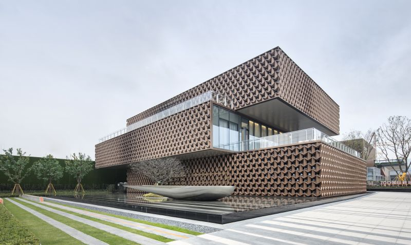

전공, Major
여러 전공들 중에서 고민을 되게 많이 하였다.
최종적으로 심리학, 건축학중에 건축학을 선택하여 해당 학과를 위주로 생활기록부를 준비하고있다.
현재 플러스교육과정을 프로그래밍 수업을 이수하고 있는 것도 추후 건축에서 이용할 "CAD"를 문제없이 다루기 위함이다.

<위의 건축물은 2019 건축 경연에서 수상한 작품이다. 경연 작품답게 과시적인 디자인이 눈에 띈다.>